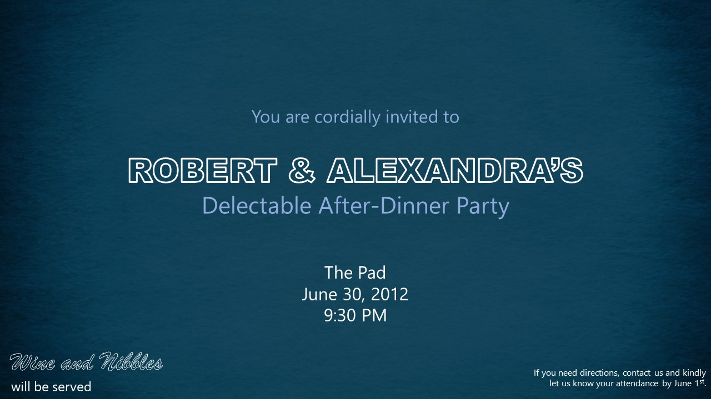

USERDES
Class Activities
Activity 1: Tell Me About Yourself
Good day! My name is Brent Millen P. Manzo, 19 years old residing at Taguig City. I stayed there with my family ever since I was born and had most of my experiences in that city. From pre-school to junior high school, I went there for school and only just now for college, I went to another city which is Makati.
To explore a new place is something I really want to do always. I get to meet new people and make new friends. Most of my closest friends now come to the same college. Also, I was able to pursue my passion for dance in this college after getting in the school's official dance varsity. From then, I started participating in trainings inside and outside the team.
Over the summer, I had workshops and performed in a recital. The team also gave me the chance to teach for the first time in an open class. It was a great summer experience for me as I was able to improve in my passion and share what I know as well. It was fulfilling for me and I will certainly do it again given the chance.
Knowing that the subject title has something to do with design and user interface, I expect to learn how to effectively make a design for programs that will allow me to efficiently make interactions with users. I am really excited for what is up for us in this subject because this appeals as something new for me in my chosen course.
Submitted 2019 July 3, 2:57 PMActivity 2: Favorite App
Shazam
Shazam is an app that allows you to identify music with the press of a button. It records the song playing and then gives you all the details about the song including the artist, album and year released.
I found this really convenient because I am able to know immediately some songs that have inaudible lyrics or those that plays for just a short time. As a dancer, I often catch vibes with some songs in public such as in restaurants, coffee shops, groceries and other places which plays some music.
- Other App Features
- - Preview songs with Apple Music and add them to Apple Music and Spotify playlists
- - View music lyrics and YouTube videos for the songs you Shazam
- - Auto Shazam can recognize songs in the background after you've left the app
- - Visual recognition also works as a code reader for all QR codes
- and many other more cool features!
Activity 3: How would you design an interface for a 1000 floor elevator?
- Layout
- - provide a keypad for numbers from 0-9
- - small display screen
Upon entering the elevator, the user will simply type the floor destination using the numbers and will be ask to confirm afterwards. The floor number entered will then be displayed on the side so that others passengers may see the stops of the elevator. For instance, a passenger enters a floor nearer than the first queued, it will be put as stop before the first one. In short, it will prioritized floors according to level, depending on whether it is going up or down, and not by first queued floor.
Activity 4: Needfinding
Problem: Smartphones tend to be distractive while learning because of the connectivity it offers. The presence of smartphones affect the focus a student as one tries to check notifications to stay connected from time to time.
Supporting study: Researchers found that students sending and receiving messages while studying scored lower test results and were less effective at tasks such as note taking. It found that when students did not use mobiles, they were better at being able to recall information. (BBC)
We could easily place our phones to somewhere out of reach while studying to avoid this kind of distraction. But in this time of digitalization, learning materials are now becoming electronic and most of it can be easily accessed through our mobile phones. This now beats the purpose of placing your phone somewhere else because you now need it for studying. In addition, emergencies are mostly addressed through our phones which is why need it around almost all the time.
Supporting study: Cell phones give students access to tools and apps that can help them complete and stay on top of their class work. These tools can also teach students to develop better study habits, like time management and organization skills. (Oxford Learning)
App Solution: Our group came up with an app idea solution for this problem which is, Study Lock. We find it very helpful to have this kind of app because all of us review our lecture notes in our mobile phones because it’s easier and paperless. Our app’s main feature is the complete lock, which will lock the phone from all of its features excluding emergency call features and partial lock, for selected apps only, for span of time set by the user. Both will be very effective as most people tend to still check their phones even without notification or any alerts receive. This will allow users to have undivided focus during study sessions.
“Our phones are not just static, there are smart people behind it trying to get our attention. Everyone is fighting for our attention to turn it into profit.” (Nikola, D. 2017)
View full document here. Submitted 2019 July 29, 11:14 PMActivity 5: Initial Prototype - Registration and Login Forms

- App Solution: Study Lock
{kind=link}
Activity 6: Persona
Submitted 2019 August 19
Good day! My name is Brent Millen P. Manzo, 19 years old residing at Taguig City. I stayed there with my family ever since I was born and had most of my experiences in that city. From pre-school to junior high school, I went there for school and only just now for college, I went to another city which is Makati.
Activity 7: Invitation
 "You are cordially invited to Robert and Alexandra’s delectable after-dinner party. Wine and nibbles will be served. When: June 30th, 2012 at 9:30pm. Where: the pad. If you need directions, ping us. Kindly let us know if you’ll be attending by June 1st."
- How can we improve this?
- - Add design and color related to the theme
- - The information can be clustered to specific groups.
- - Usage of proper punctuation.
- - The information is about an invitation to a party.
- - Hierarchy of information should be present
Grid Practice
- A8a
- A8b
- A8c
- A8d
- A9
Grid Layouts - A8a
Submitted 2019 August 28, 1:33 AM

Grid Layouts - A8b
Submitted 2019 August 28, 1:33 AM
Grid Layouts - A8c
Submitted 2019 September 2, 10:13 AM

Grid Layouts - A8d
Submitted 2019 September 2, 10:13 AM

Grid Layouts - A9
Submitted 2019 August 27, 12:07 PM